返回主页
中国 陕西 西安
2015-1-15至2015-1-17（共3天）
*****行程概况*****
day1：回民街->鼓楼->钟楼->古城墙（南门永宁门上下）->回民街->西羊市
day2：大明宫国家遗址公园->陕西历史博物馆->大雁塔->大唐芙蓉园->大雁塔前广场音乐喷泉
day3：华清宫（华清池+骊山）->兵马俑
*****交通住宿*****
交通篇之一：西安站（普通火车）比较近，就在城墙外、西安北（高铁）较远、西安咸阳国际机场比较远
交通篇之二：公交有1元也有2元，比较方便、地铁两条线路，一横一纵、出租车起步价6元
住宿篇：火车站出来沿着直路往南走，有个万达广场，附近很多住宿的，都比较方便，去的时候是淡季，标间100左右一晚。我住的是汉庭酒店万达二店，就在主干道旁，万达附近旁边，酒店一出门就有公交。
*****美食餐饮*****
肉夹馍，羊肉泡馍，biangbiang面，裤带面，胡辣汤，玫瑰镜糕
*****正式开始（图片较多，可能加载比较慢）*****
我是从成都坐火车来西安的，中午12点左右下的火车，去完酒店放完东西后饿得不行，就直奔【回民街】
二话不说，来一碗老米家优质羊肉泡馍（优质就是肉多）38元,肉嫩汤鲜，配得大蒜也是处理过，难得我都吃的下！
再来一个分量十足的肉夹馍15元！
玫瑰镜糕，味道不错，有点像广东这边的钵子糕。
吃饱喝足后，离开回民街，一出来就是【鼓楼】.不远处，与之呼应的【钟楼】，所谓晨钟暮鼓。这两个景点上去都是要钱的，跟小伙伴商量了下，觉得没必要上去，还是远观一下好了。
再往南走几分钟，我们来到西安南面的城墙，【永宁门】，正好赶上有一个古装表演，前面几位长发飘飘妹纸大口说着粤语，一听就有亲切感，肯定是广东那边过来旅游的，全国哪里都不缺旅游的广东人-，-
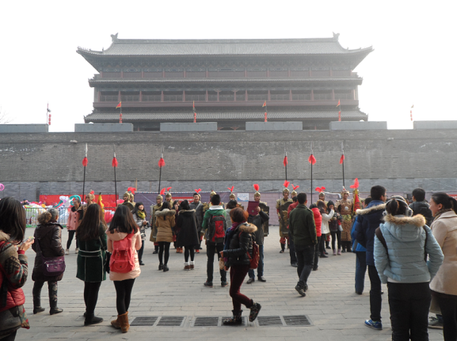
买了票（学生半价好像是40还是50）登上古城墙后，果断租了辆自行车(好像是押金1人200元,租金1人2小时40元)，绕城踩一圈，玩玩拍拍照，2小时！
然后就开始骑行啦！由于是淡季，人很少，太爽了，宽度大概是双向四车道。内城的建筑风格古色古香，外城还有护城河，古代人真实机智，攻下一个城还真不是那么容易的。
It's me！
还是城墙，各种角度。
不知不觉，已经黄昏了。
在城墙上看西安火车站人来人往。
夜幕降临，亮起了灯饰和红灯笼。
毕竟那么长时间了，这裂缝。。。
晚上还是决定再回【回民街】吃东西！
biangbiang面！打不出这字啊！
听大学一西安同学推荐，大串烧烤羊肉串+冰峰饮料（本地品牌够味！有点广东人对沙士的情怀。）
接着走进【西羊市】，跟回民街垂直的一条街，很长走不到头。那是切糕吗？！不管了，我吃到切糕了！还有中国最古老的乐器埙（念xun）。
好大的陕北狗头枣！果断买了两袋，肉多结实甜！好大的石子馍！（咳咳，这个看看就好了）
第二天早餐，胡辣汤。
吃完后坐车来【大明宫】国家遗址公园，果真是遗址，地方老大，就剩下些土堆是真品！据说准备花很多钱重建。看到那个河面没有，早上结了一层薄冰的！
正好又赶上古装表演，大唐盛世。
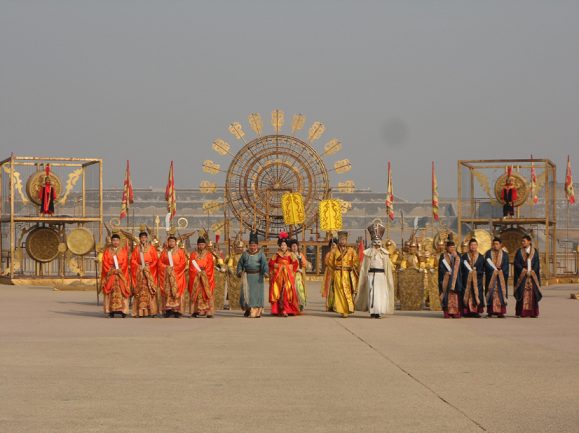
要是大明宫还在的话，是比北京故宫还大的呀。
中午坐车去【陕西历史博物馆】，凭身份证排队免费领票的（有专门黄牛拿了不少票，10元1张说不用排队，但其实淡季完全没必要，估计旺季还是能卖出不少），好像是一天4000张，中午12点到1点半休息不发票。我去到还没到下午发票时间，就先去吃中，没错又是吃面！
拿票后就进去了！要个讲解员还是很必要的，100元1个讲解员，最多带10个人，我就是和别人拼的，平均下来1个人才10元。给我们讲解的是个不错的妹纸，声音好甜，后来走的时候才发现居然是个大二的学妹！在本地念大学，放假来做兼职，我后悔没要联系方式了心塞！TAT！里面就是各种有趣的东西啦，自己看看吧。
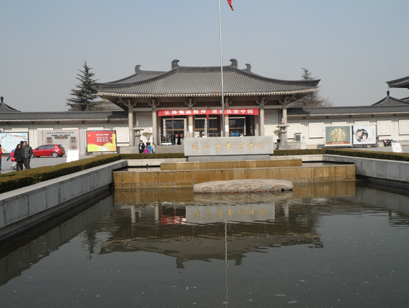
从博物馆出来后，就往【大雁塔】走了，没多远，几分钟就到了。广场很大，喷泉很壮观，晚上会更加漂亮。
稍待片刻后，步行前往【大唐芙蓉园】，是为了展示当时大唐盛世状况的主题公园，公园比较大，有很多还原当时场景的古装表演。
园区大概是环状，我们绕圈一个个景点去，首先来到的是【仕女馆】，在这看到的是“民间选秀女”表演。
仕女馆里有个塔，登顶观赏，风景也不错。
仕女馆背后有个巨型秋千，小伙伴都快把我扔飞了，还是碰不到那个球，爽是爽，把我吓得半死。
这个好像是巡逻骑兵，绕园游行的。马匹非常高大、壮硕。
步入黄昏，景色还是不错，园中央有个大湖就是怡人。
一个小剧场演戏剧，表示我欣赏不来。
接下来【****前方高能预警****】，本想凑热闹看那些人在干嘛，结果被稀里糊涂抓来当客串表演的【新郎】还拜堂成亲！！！！！被戏耍了一通！！还好最后翻开头巾的妹纸还不错，就当免费租古装服拍照吧23333333
还是回到现代的我吧O(∩_∩)O，这里是园区中心的紫云楼。
再随便逛逛就入夜了，走出园区，外面有个楼好多鸽子！返回【大雁塔】附近，先解决晚餐，就准备看【音乐喷泉】了。晚餐在一个连锁快餐店，没错也是主打肉夹馍和面食。
重头戏开始了！音乐喷泉每天晚上8点30分开始，持续30分钟。喷泉随音乐律动，大雁塔就在后方，古代与现代交融，身临其境，有一种特别的感受，你们有机会自己来体会一下吧。
喷泉结束，一切恢复平静，人也散去了，这天行程也标志着结束了。
第三天，离开西安市区，去常说的东线游，即【华清池+兵马俑】。在火车站东广场有正规大巴去的，8元到华清池，上车才给钱的。1个多小时就到了华清池。到时去兵马俑在下车地上车前往，10几分钟就可到。一下车就可以看到李隆基和杨玉环的雕塑。
进入景区，也可以租个讲解员，也是和别人凑的，人均也是10元1人，听一下还是挺有必要的。大型情景舞台剧“梦回大唐”也在这里上演，只不过冬季休演来维修舞台。
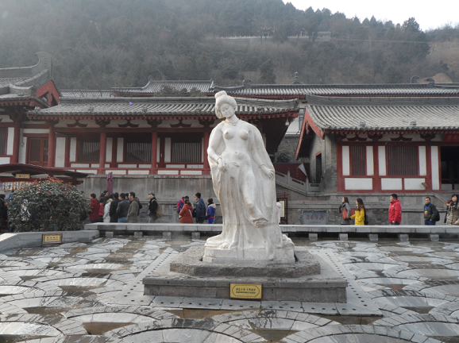
华清池，很多人来最主要看的其实就是当年李隆基为杨贵妃弄的浴池以及他自己的浴池，都很有讲究的，只能说古人太“会玩”。
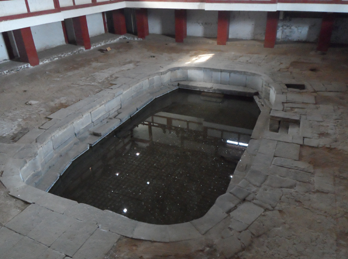
有专门的出水口，和引流，其中3号出水口现在还在一直有热水，亲自感受了下还是挺热的。
老蒋当年也来这里，而且就在这里发生了“西安事变”。当时老蒋在卧室，听到枪声后，就从后窗跳出，一溜小跑到骊山上去了。
最后来这里看了个6d电影，还不错，不用买票，排队等候即可，一场30分钟左右。他这个电影是银幕加人现场演的，而且每个场景在不同楼层，你边看边要转换场景。
出来后又坐车去【兵马俑】，在附近吃了饭，来西安的第一顿饭！之前都是面食。在那种农家乐里，点了80元套餐，4菜1汤，4个人吃的干干净净，味道不错，价格不贵。之后就走去售票厅了，这里千万要小心，很多黑车说距离很远要你坐个车，后来听正规导游说很可能把你拉到不知道哪个地方给些假的给你看，所以还是不要随便听别人的，按照指示牌走几分钟就到了。同样凑人租导游，人均10元。主要有博物馆和3个坑馆，每个馆是不同兵种。
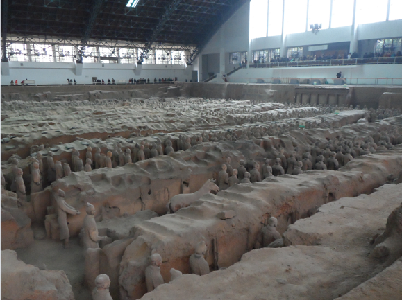 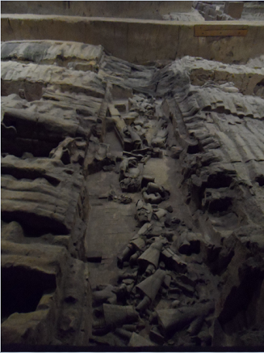
接下来是单个俑的展示，可以看到是很精细的，手上掌纹都有，教下的鞋纹也弄的很真实。
晚上坐车回去，西安的旅程就暂告一段落了！
返回主页


 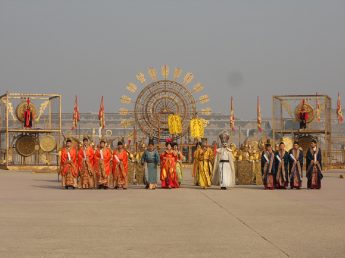
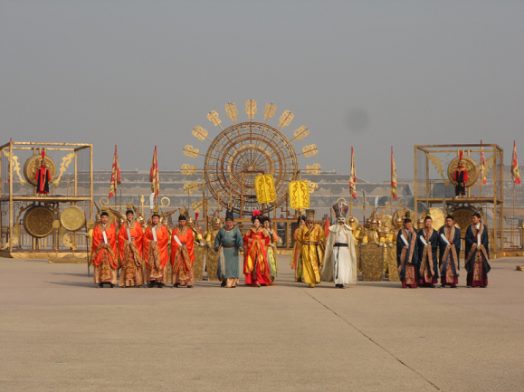


 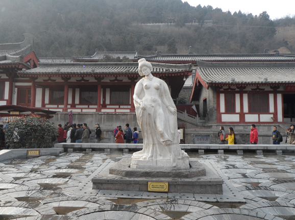
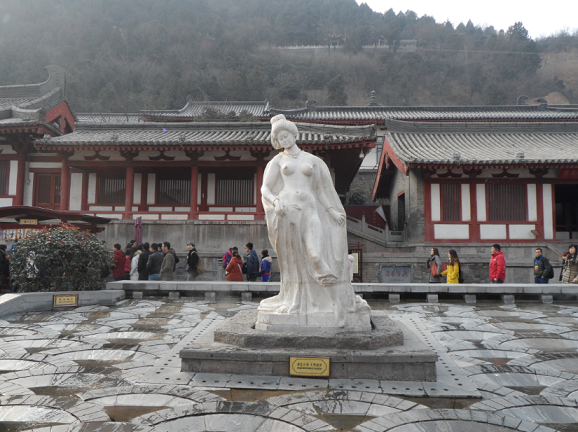